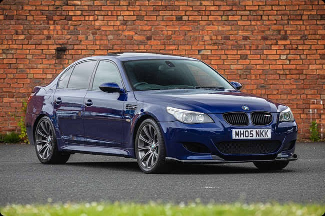
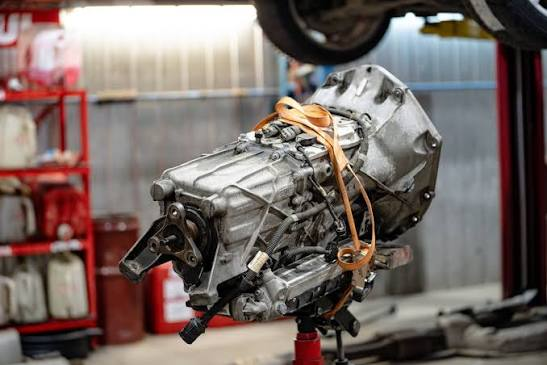
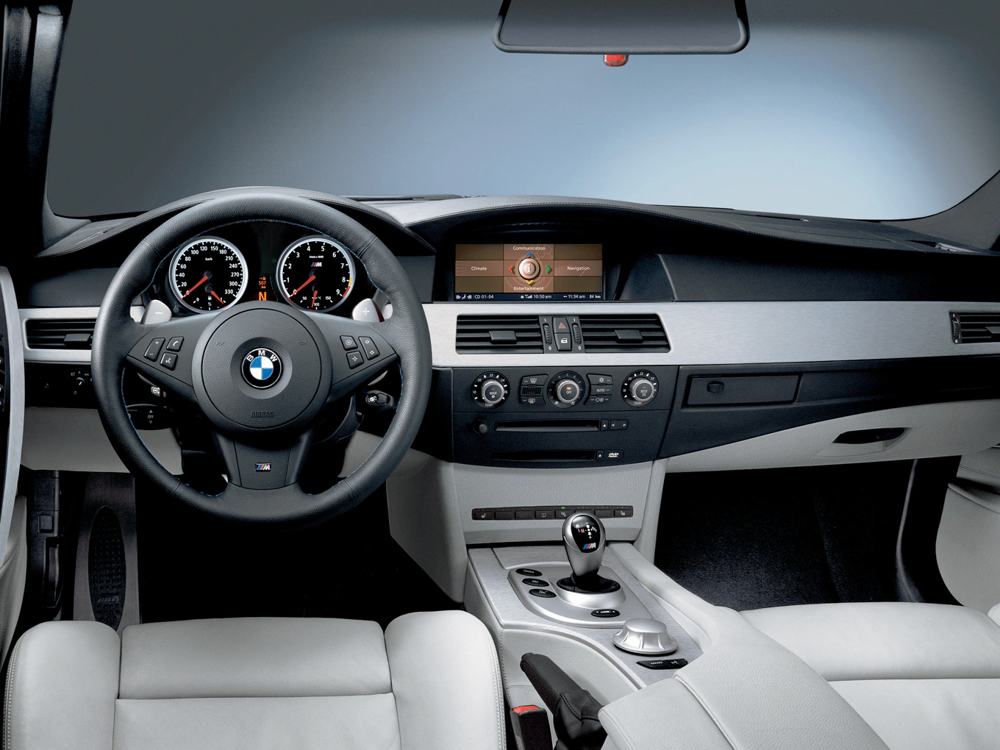
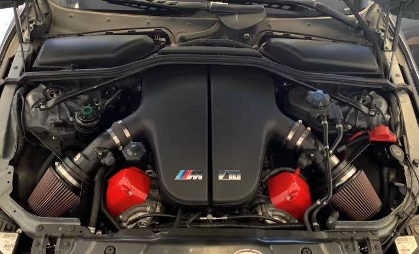
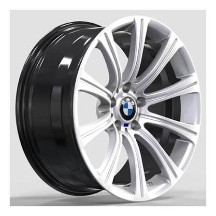

Hi. This is a website where you can find all the information you need to know about the BMW M5 E60.

This is one of the most iconic BMW's that have ever been built in the previous years. With 19,564 units sold and 1,025 units sold for the BMW M5 Touring Estate. With an astonishing 5.0L V10 unleashing 500bhp with an S85B50 model base engine and 520nM of Torque

This is the standard gearbox that comes with the M5 E60 which is a Sequential Manual Gearbox(SMG3) with a 7speed gear, Or with a 6speed manual gearbox which was available in the NA market.

This is the beautiful interior of the BMW M5 E60 which was ahead of the time with the electronics and the design. The complete setup of the IDrive through a computer installed in the interior with a GPS and fully accessible from your phone connecting it via Bluetooth or with an AUX cord from the dashboard. It has some extra features for an extra charge that you can apply to. You can have screens set-up on both seats for the backseat passengers to keep them entertained during a road-trip.

This is the base model top cover of the S85B50 engine on the M5 V10 that's unleashing 500bhp at 7,750rpm and 520NM at 6100rpm to the wheels. Unleashing the full power at redline @8,250rpm with a V shaped 90degrees angle with an individual throttle inspired tech from F1(formula1).

This is the standard wheels of the Bmw M5 V10. It's a 19" wheels with a 5x120 bolt pattern and 72.5mm center bore. The standard setup of the wheels consists of 19x8.5" ET12 wheels on the front and 19x9.5 ET28 wheels on the rear.